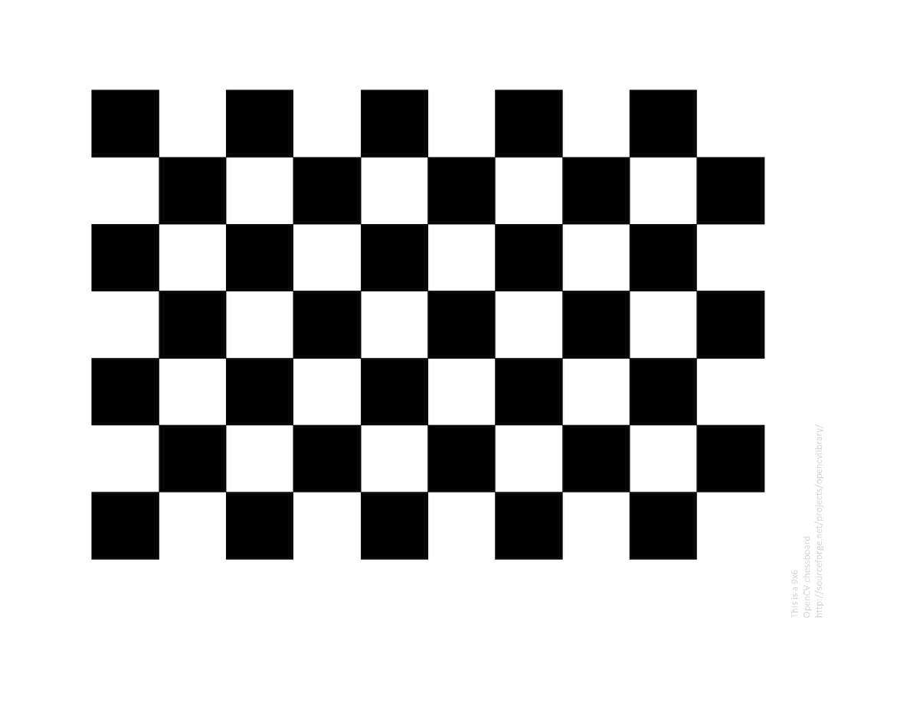

OpenCV4.0相机标定教程
相机已经存在了很长时间。 然而，随着20世纪后期廉价针孔相机的推出，它们成为我们日常生活中的常见现象。 不幸的是，这种便宜与其价格有关：严重失真。 幸运的是，这些是常数，并且通过校准和一些重新映射，我们可以纠正这一点。 此外，通过校准，您还可以确定相机的自然单位（像素）与真实世界单位（例如毫米）之间的关系。这个校准过程就是相机标定。
理论
对于失真，OpenCV考虑了径向和切向因子。 对于径向因子，使用以下公式：
$$x_{distorted} = x( 1 + k_1 r^2 + k_2 r^4 + k_3 r^6) \ y_{distorted} = y( 1 + k_1 r^2 + k_2 r^4 + k_3 r^6)$$
因此，对于$（x，y）$坐标处的未失真像素点，其在失真图像上的位置将是$（x_{distorted},y_{distorted}）$。 径向变形的存在表现为“桶状”或“鱼眼”效应。
由于摄像镜头与成像平面不完全平行，因此会发生偏心畸变。 它可以通过公式表示：
$$x_{distorted} = x + [ 2p_1xy + p_2(r^2+2x^2)] \ y_{distorted} = y + [ p_1(r^2+ 2y^2)+ 2p_2xy]$$
所以我们有五个失真参数，在OpenCV中呈现为一行矩阵，有5列：
$$distortion_coefficients=(k_1 \hspace{10pt} k_2 \hspace{10pt} p_1 \hspace{10pt} p_2 \hspace{10pt} k_3)$$
现在我们使用以下公式进行单位转换：
$$\left [ \begin{matrix} x \ y \ w \end{matrix} \right ] = \left [ \begin{matrix} f_x & 0 & c_x \ 0 & f_y & c_y \ 0 & 0 & 1 \end{matrix} \right ] \left [ \begin{matrix} X \ Y \ Z \end{matrix} \right ]$$
这里通过使用单应性坐标系（和$w = Z$）来解释$w$的存在。 未知参数是$f_x$和$f_y$（相机焦距）和（$c_x，c_y$），它们是以像素坐标表示的光学中心。 如果对于两个轴，使用具有给定纵横比（通常为1）的共同焦距，则$f_y = f_x * a$，并且在上部公式中，我们将具有单个焦距$f$。 包含这四个参数的矩阵称为相机矩阵。 虽然无论使用何种相机分辨率，失真系数都是相同的，但应根据校准分辨率的当前分辨率进行缩放。
确定这两个矩阵的过程是校准。 通过基本几何方程计算这些参数。 使用的等式取决于所选择的校准对象。 目前，OpenCV支持三种类型的校准对象：
- 古典黑白棋枰
- 对称的圆圈图案
- 不对称的圆圈图案
基本上，您需要使用相机拍摄这些图案的快照，然后让OpenCV找到它们。 每个找到的模式都会产生一个新的等式。 要求解方程，您需要至少预定数量的模式快照，以形成一个良好的方程系统。 棋盘图案的数量较高，圆圈图案的数量较少。 例如，理论上棋盘图案需要至少两个快照。 但是，实际上我们的输入图像中存在大量噪声，因此为了获得良好的结果，您可能需要至少10个不同位置的输入模式的快照。
目标
OpenCV4.0中相机标定样例程序的目标：
- 确定失真矩阵
- 确定相机矩阵
- 从摄像机，视频和图像文件列表中获取输入
- 从XML / YAML文件中读取配置
- 将结果保存到XML / YAML文件中
- 计算重新投影误差
源代码
您也可以在OpenCV源库的samples / cpp / tutorial_code / calib3d / camera_calibration /文件夹中找到源代码，或从此处下载。要使用该程序，请使用-h参数运行它。该程序有一个重要的参数：配置文件的名称。如果没有给出，那么它将尝试打开名为“default.xml”的那个。这是XML格式的示例配置文件。在配置文件中，您可以选择将相机用作输入，视频文件或图像列表。如果选择最后一个，则需要创建一个配置文件，用于枚举要使用的图像。这是一个例子。要记住的重要部分是需要使用绝对路径或应用程序工作目录中的相对路径来指定图像。您可以在上面提到的samples目录中找到所有这些。
应用程序启动时从配置文件中读取设置。虽然这是它的一个重要部分，但它与本教程的主题无关：摄像机校准。因此，我选择不在此处发布该部分的代码。有关如何执行此操作的技术背景，您可以在使用XML和YAML文件的文件输入和输出教程中找到。
构建相机标定程序
切换到camera_calibration示例教程源代码所在目录，创建build临时目录并创建CMakeLists.txt文件。
1 | cd ~/opencv/samples/cpp/tutorial_code/calib3d/camera_calibration/ |
CMakeLists.txt文件内容如下：
1 | cmake_minimum_required(VERSION 2.8) |
构建相机标定程序：
1 | cd build |
运行相机标定程序
运行相机标定程序的目的在于获得相机的失真参数和内外参，其中相机的失真参数和内参只需标定一次便不再变化。下面以标定笔记本自带摄像头说明运行相机标定程序的步骤。
修改标定配置参数
找到camera_calibration/in_VID5.xml文件，这是标定程序使用的配置文件，需要设置里面的几个参数。
- 修改棋盘格交叉点参数
1 | <!-- Number of inner corners per a item row and column. (square, circle) --> |
需要特别注意的是，这里的宽度和高度是指内部交叉点的个数，而不是方形格的个数。如图1所示的棋盘格，内部交叉点的宽度是9，高度是6。请务必填写正确，否则无法标定。

- 修改每格的宽度
每格的宽度应设置为实际的毫米数，该参数的实际用途尚待考证。目前看来，即使设置的不准确也无大碍。根据我使用的棋盘格，设置棋盘格参数42。
1 | <!-- The size of a square in some user defined metric system (pixel, millimeter)--> |
- 设置图像输入方式
例程提供了三种输入方式。不过，如果待标定的摄像头已经接入电脑，建议使用input camera方式。该方式只需要设置视频输入设备号，对于笔记本电脑来说，通常0表示笔记本自带摄像头，1表示外接摄像头。
1 | <!-- The input to use for calibration. |
执行相机标定程序
运行如下命令开始标定笔记本自带摄像头，标定完成后将得到保存相关参数的文件。
1 | ./camera_calibration ../in_VID5.xml |
参考链接
- Using OpenCV with gcc and CMake,by opencv.
- Camera calibration With OpenCV,by opencv.
- C++11 activation with
or <set (CMAKE_CXX_STANDARD)> ,by stackoverflow. - 计算机视觉之相机成像原理与坐标系转换,by jack huang.
- OpenCV 相机参数标定（Camera Calibration）,by Wafei.
- 图像二维坐标转世界三维坐标, by 橙子.
- solvepnp三维位姿估算,by cocoaqin.
- 单目SLAM理论基础,by zhaoxuhui.
- SLAM相机位姿估计(1),by zhaoxuhui.
- 张氏法相机标定,by Lstyle.
- 机器视觉的相机标定到底是什么？, by zhihu.
- 相机标定究竟在标定什么？,by 许翔翔.